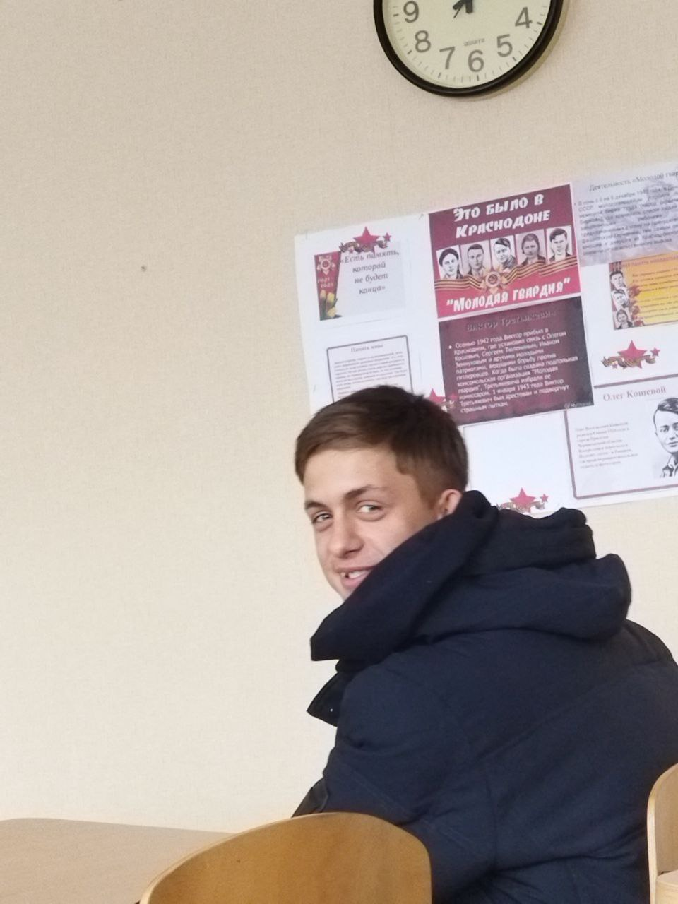

В каждом учебном заведении есть тот, кто приносит радость и свет в повседневную рутину. В нашей школе таким является Бубон. Этот парень - настоящая энергетическая батарея, всегда готовая поднять настроение и зарядить позитивом.
Кто же такой, этот "Бубон"?

«Всегда ставьте цели и не выполняйте их! (с) Бубон»
Бубон - не только обладатель прекрасного чувства юмора, но и настоящий друг. Его доброе сердце и умение вовремя поддержать делают его ценным товарищем для всех, кто его окружает. В трудные моменты можно быть уверенным, что Бубон будет рядом, готовый помочь и поддержать.
Но его значение для нашего коллектива не ограничивается лишь хорошим настроением. Бубон также вдохновляет нас быть лучше. Его целеустремленность и оптимизм напоминают, что любая цель достижима, если верить в себя и двигаться вперед несмотря ни на что. Так что, если вы хотите
добавить радости и света в свою жизнь, просто найдите Бубона в своем окружении. Этот парень точно умеет делать мир ярче и душу светлее. Так же на этой странице можно прочитать Анекдот про Бубона :)
Перечень талантов Бубона по пунктам
Юмор: Бубон обладает отличным чувством юмора и способен поднять настроение окружающим в любой ситуации
Дружелюбие: Он легко находит общий язык с людьми и всегда готов помочь и поддержать друзей.
Коммуникабельность: Бубон умеет объединять людей и создавать дружественную атмосферу в коллективе.
Творческий потенциал: Он обладает талантом в области музыки, живописи и литературы, что делает его интересным собеседником и вдохновляет других на творческие выражения.
Эмпатия: Бубон чувствителен к чужим переживаниям и всегда готов выслушать и поддержать в трудную минуту.
Экологическое сознание: Он активно участвует в проектах по охране окружающей среды и призывает других заботиться о природе.
Инициативность: Бубон является инициатором многих мероприятий в школе, что способствует ее разнообразию и активизации студенческой жизни.
Три прикола про Бубона
Мастер импровизации: Когда дело доходит до создания атмосферы веселья, Бубон - настоящий профессионал. Он способен придумать забавный анекдот или неожиданный трюк прямо на ходу, превращая даже самую обыденную ситуацию в праздник.
Король приключений: Бубон - это всегда идеальный компаньон для приключений. С ним каждый день становится как новая серия захватывающего сериала. Он всегда готов к неожиданным поворотам событий и способен превратить даже самую скучную прогулку в захватывающее приключение.
Танцор без границ: Не проходит и дня, чтобы Бубон не подарил нам свой танцевальный шедевр. Его непревзойденные движения на танцполе не оставляют равнодушными никого. Он словно сливается с музыкой и создает атмосферу веселья, которая заражает всех вокруг своим позитивом и энергией.
Заключение:
В заключении хочется сказать, что Бубон - это не просто одноклассник, а настоящая живая легенда нашей школы. Его талант, энтузиазм и доброта делают его незаменимым членом нашего коллектива. Будь то поддержка в трудную минуту, веселые приключения или просто веселые посиделки, Бубон всегда готов создать атмосферу радости и позитива. Мы уверены, что его светлая энергия будет сиять в нашем классе еще много лет, вдохновляя и радуя всех вокруг. Ведь в мире, где никогда не бывает слишком много улыбок, Бубон - настоящий звездный свет в нашем небе.